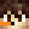

hello, you may call me Gus.
currently continuing my studies in Sydney, I'm attempting to re-write my life journey, one way or another.
I currently focus on web development, right now front-end, but eventually back-end because doing the dirty work is what I do, I guess. I get involved in real estate stuff every now and then due to family reasons, so that's fun (not).
outside that I'm a part-time gamer and newbie photographer, mostly plushies related. main games are maimai and Minecraft, and then everything else in between, such as CS and all kinds of party games.
follower of ラブライブ！ (サンシャイン！！) and ゆるキャン△.
I'm Saut, Saut_SixSond.
you have found my Minecraft profile, congratulations. GusDira12 is my main account still.
before Saut, I was a top BlockParty player in BrokenLens, a very popular Bedrock server at that time, while being somewhat chaotic.
then Saut arrived, who turned me into a flint and steel one-trick, a luck god apparently, and occasional builder.
the whole fns thing mainly came from an ultra hardcore (UHC) game back in 2017, where I was using lava buckets. I ran out, and then swapped for a flint and steel, and I never switched back ever since.
besides that, I partly run UHC Asia Elite events since 2020 and a part-time troll, occasionally uploaded to my main YouTube channel.